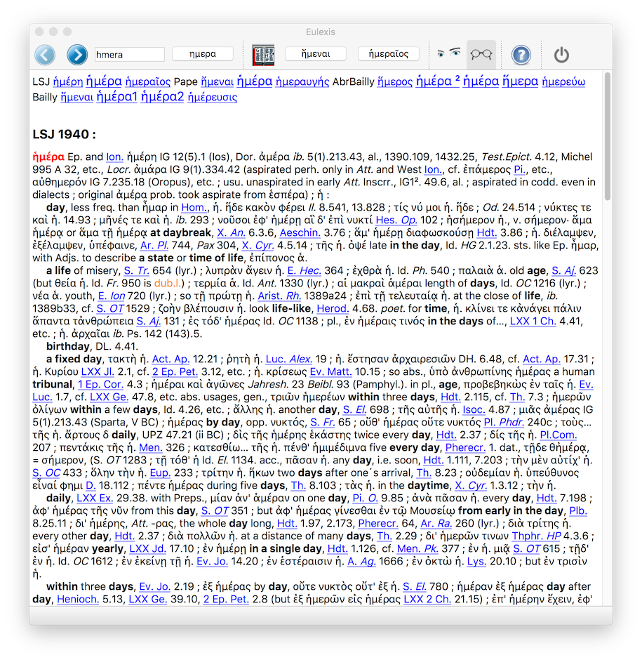
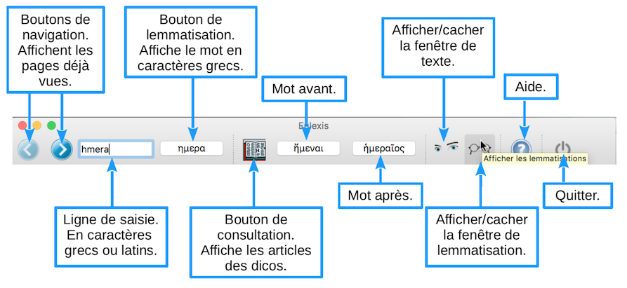

Eulexis v.1.1 – guide juin 2020
précédent : présentation index suivant : Fenêtre de lemmatisation
Eulexis se présente comme beaucoup de programmes avec une fenêtre principale. Ici, elle sert à consulter les dictionnaires. La barre d'outils regroupe les actions que l'on peut effectuer. Lorsqu'on arrête le curseur sur un bouton de la barre d'outils, une bulle d'aide donne quelques indications sur la fonction du bouton.

La ligne de saisie (le cadre blanc à gauche, qui contient ici hmera) permet d'écrire le mot qui nous intéresse. On peut le saisir en caractères grecs ou en caractères latins. Dans cette fenêtre, la validation (par la touche « Entrée ») de la saisie déclenche la consultation des dictionnaires. Au cours de la frappe, le mot apparaît en caractères grecs ημερα dans le bouton qui est situé immédiatement à droite du cadre de saisie. Cela permet, en particulier, de vérifier qu'on utilise la bonne lettre pour représenter le caractère grec qu'on veut obtenir. Ce bouton sert aussi à lemmatiser le mot (voir la page suivante).
Lorsqu'on ne connaît pas le mot exact que l'on cherche, on peut utiliser des caractères de substitution. Eulexis en connaît deux : l'astérisque * et le point d'interrogation ? pour représenter n'importe quels caractères. La différence entre les deux est que le ? remplace un caractère et un seul, alors que l'* remplace un nombre arbitraire de caractères (éventuellement nul). Ces caractères de substitution ne fonctionnent que lors d'une saisie en caractères latins. Le temps nécessaire pour faire la recherche et afficher le résultat peut être augmenté. Nous avons mis quelques limitations à l'utilisation de ces caractères.
Exemples en se limitant aux résultats dans le LSJ
Les expressions rationnelles (dites souvent expressions régulières par traduction fautive de l'anglais regular expression) sont une façon commode de formaliser une recherche. Elles permettent en particulier de proposer un choix entre deux caractères ou plus (par exemple, “[sn]” représente un caractère parmi les deux proposés donc soit “s”, soit “n” ; ce qui peut permettre de trouver un substantif dont on ignore s'il est masculin ou neutre). On dispose donc d'un outil plus sélectif que le ? introduit précédemment. Les expressions rationnelles permettent aussi d'exclure certains caractères de la recherche. Ainsi, “[^sn]” signifie un caractère autre que ceux entre crochets (ici, s et n). Supposons que l'on soit intéressé par les composés de νομος avec quatre caractères avant : on cherchera donc .{4}nomos. Toutefois, on s'aperçoit vite que cette recherche butte sur la limite des vingt articles. On la partagera en deux recherches : [a-i].{3}nomos (qui donnera 14 résultats dans le LSJ) et [^(a-i)].{3}nomos (qui en donnera 16). Remarque : on aurait aussi pu utiliser [k-z].{3}nomos. Une fois de plus, on remarquera que l'ordre alphabétique des caractères grecs n'est pas respecté : en particulier, γ (=g), θ (=q) et ζ (=z) ne sont pas à leur place.
Je ne suis absolument pas spécialiste des expressions rationnelles et on trouvera ici, une fiche synthétique, et ailleurs, quelques pistes. Notons que l'emploi de l'* ou du ? a, dans les expressions rationnelles, une signification différente de celle comme caractères de substitution. Tout le traitement repose sur la bibliothèque Qt utilisée et je ne puis garantir le résultat d'une recherche. Le programme distingue une requête de type expression rationnelle par la présence de l'un des caractères suivants : “.” (n'importe quel caractère), “[” (associé à “]” pour offrir un choix entre plusieurs caractères), “(” (qui capture la sous-expression contenue dans les parenthèses ; le groupe capturer peut être repris par “\1”, voir un exemple ci-dessous), “{” (pour donner un nombre de répétitions) et “|” (le “ou” entre plusieurs expressions). Remarque : chacune des parenthèses ouvrantes doit être associée à sa parenthèse fermante pour former une expression rationnelle valide (le programme rejette toute requête invalide).
Exemples en se limitant aux résultats dans le LSJ
On a tout à gauche les deux boutons de navigation habituels. La flèche vers la gauche permet d'afficher les pages qui ont été consultées précédemment. Quand on est remonté dans l'historique, la flèche vers la droite devient active et permet de revenir jusqu'à la dernière page consultée. Les flèches sont inactives quand on a atteint l'extrémité correspondante de l'historique. Comme pour tous les navigateurs, quand on est remonté dans le passé et qu'on fait une nouvelle requête, une partie de l'historique d'origine est perdue.
Le groupe de trois boutons au centre est spécifique de la consultation des dictionnaires. Le bouton représentant un livre ouvert permet d'ouvrir les dictionnaires. Il est donc équivalent à la validation de la ligne de saisie. Les deux boutons qui suivent servent à « feuilleter » les dictionnaires en donnant le mot qui précède et celui qui suit le dernier article consulté (ici ἤμεναι et ἡμεραυγής). Le choix des dictionnaires affichés se fait dans le menu “Dicos”. Dans le résultat de la consultation, on retrouve plusieurs fois une ligne de liens qui permet de naviguer dans la page en allant directement à l'article du Bailly, par exemple, ou de consulter l'article qui précède ou suit dans chaque dictionnaire. Dans l'exemple ci-dessus, les trois dictionnaires ne proposent pas les mêmes mots (mais ce n'est pas toujours le cas).

Les quatre boutons de droite servent à afficher les fenêtres supplémentaires, respectivement pour le texte et la lemmatisation, à ouvrir les pages d'aides dans le navigateur et à quitter le programme.
précédent : présentation index suivant : Fenêtre de lemmatisation